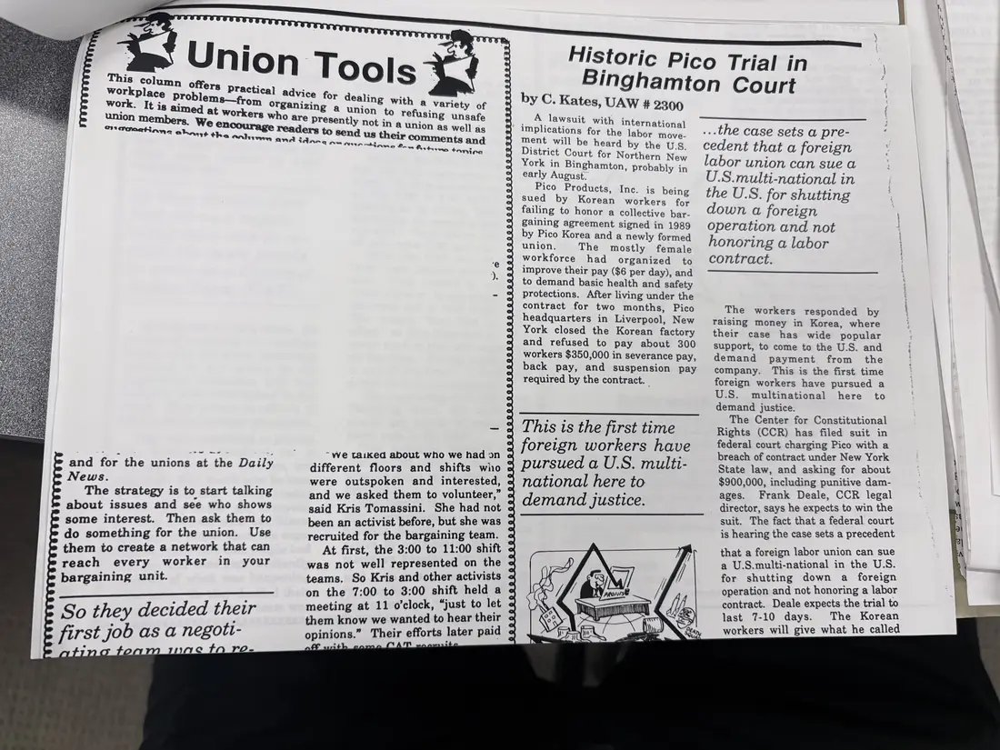
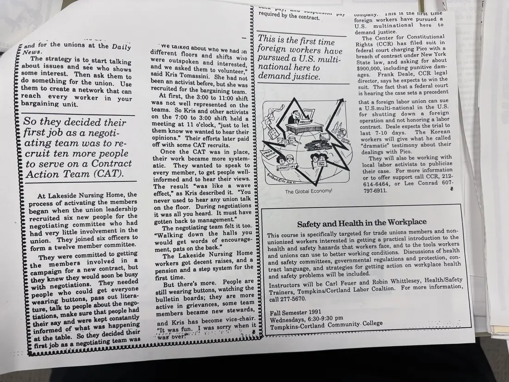

Newsletter, 2 pages
“Union Tools” and “Historic Pico Trial in Binghamton Court”
[1991]Date inferred
A labor newspaper spread: “Union Tools” describes how union leaders at Lakeside Nursing Home recruited members to a Contract Action Team; C. Kates of UAW Local 2300 reports on Korean workers' suit in federal court in Binghamton against Pico Products for failing to honor their 1989 union contract; a box announces the fall 1991 “Safety and Health in the Workplace” course at Tompkins Cortland Community College.
Two photographs show different parts of the same spread. A third photograph is not shown.
Download or cite this itemPages


(open zoom view)Read the page text (machine-read, mostly readable)
This text was generated automatically from the photograph and has not been corrected. The image is the authoritative record.
onemnationa abeny er and for the unions at the Daily News. The strategy is to start talking about issues and see who shows some interest. Then ask them to do something for the union. Use them to create a network that can reach every worker in your bargaining unit. So they decided their first job as a negott- no ton moc to ro- wt tha anhimn ans “we taiked about who we had on « different floors and shifts wiio » were outspoken and interested, « and we asked them to volunteer,” said Kris Tomassini. She had not « been an activist before, but she was o recruited for the bargaining team. At first, the 3:00 to 11:00 shift < was not well represented on the teams. So Kris and other activists on the 7:00 to 3:00 shift held a meeting at 11 o'clock, “just to let them know we wanted to hear their opinions.” Their efforts later paid fei int by C., Kates, UAW # 2300 A lawsuit with international Plications for the labor move- ment will be heard by the U.S District Court for Northern New York in Binghamton, Probably in early August. Pico Products, Inc. is being sued by Korean workers for failing to honor a collective bar- gaining agreement signed in 1989 by Pico Korea and a newly formed union. The mostly female workforce had organized to improve their pay ($6 per day), and to demand basic health and safety protections. After living under the contract for two months, Pico headquarters in Liverpool, New York closed the Korean factory and refused to pay about 300 workers $350,000 in severance pay, back pay, and suspension pay required by the contract. This is the first time foreign workers have pursued a U.S. multi- national here to demand justice. Nee SM eC faivecss y So \ aja vy) aN a, a sig i ray = sx i ye, Le Historic Pico Trial in Binghamton Court ...the case sets a pre- cedent that a foreign labor union can sue a U.S.multi-national in the U.S. for shutting down a foreign operation and not honoring a labor contract. The workers responded by raising money in Korea, where their case has wide popular support, to come to the U.S. and demand payment from the company. This is the first time foreign workers have pursued a U.S. multinational here to demand justice. The Center for Constitutional Rights (CCR) has filed suit in federal court charging Pico with a breach of contract under New York State law, and asking for about $900,000, including punitive dam- ages. Frank Deale, CCR legal director, says he expects to win the suit. The fact that a federal court is hearing the case sets a precedent that a foreign labor union can sue a U.S.multi-national in the U.S. for shutting down a foreign operation and not honoring a labor contract. Deale expects the trial to last 7-10 days. The Korean workers will give what he called


(open zoom view)Read the page text (machine-read, mostly readable)
This text was generated automatically from the photograph and has not been corrected. The image is the authoritative record.
and for the unions at t ily and f the Daily The strategy is to : sta i about issues and see Siotinn ne interest. Then ask ines ‘ : something for the union. Use em to create a network that can seraet every worker in your argaining unit. So they decided their first job as a negoti- ating team was fo re- cruit ten more people to serve on a Contract Action Team (CAT). At Lakeside Nursing Home, the process of activating the members began when the union leadership recruited six new people for the negotiating committee who had had very little involvement in the union. They joined six officers to form a twelve member committee. They were committed to getting the members involved in a campaign for a new contract, but they knew they would soon be busy with negotiations. They needed people who could get everyone wearing buttons, pass out litera- ture, talk to people about the nego- tiations, make sure that people had their say and were kept constantly informed of what was happening “at the table. So they decided their first job as a negotiating team was afrah. GF hdlelt yA Gag over)” | ; “We taike different floors an were outspoken an been an activist before recruited for the bargaining team. cegeiehke the 3:00 to 11:00 shift 2 sae Sreeercsonted on the ¢ i am ° Kris and other activists 2 1e 7:00 to 3:00 shift held a & Meeting at 11 o'clock, “just to let < them know we wanted to hear their © opinions.” Their efforts later paid ¢ off with some CAT recruits. Once the CAT was in place, « their work became more system- 4° They wanted to speak to e every member, to get people well- « informed and to hear their views. « The result “was like a wave effect,” as Kris described it. “You = never used to hear any union talk ¢ on the floor. During negotiations C it was all you heard. It must have ° atic. gotten back to management.” The negotiating team felt it too. : “Walking down the halls you » would get words of encourage: & ment, pats on the back.” The Lakeside Nursing Home : workers got decent raises, and a © pension and a step system for the e first time. But there’s more. “Tt was fun. J was sorry when it d about Ae we had on shifts wiio purs ver et Aina wis eda U.S. multi- SNe sked them to volunteer,” - 8 Tomassini. She had not but she was & People are ¢ still wearing buttons, watching the © bulletin boards; they are more © active in grievances, some team © members became new stewards, ¢ and Kris has become vice-chair. « Nua POY, an on Seerettay cuicre quired by the contract = This is the first time oreign workers have national here to demand justice. Ke y al 4 y ) Ya C way Be NS SPD NS Lay! oP gam / \\ Simm) Fen Dr; WSS o 9 eee IS i Travor’) OFF The Global Economy! call 277-5670. Fall Semester 1991 Wednesdays, 6:30-9:30 pm Safety and Health in the Workplace This course is specifically targeted for tra unionized workers interested in getting a practical introduction to the health and safety hazards that workers face, and to the tools workers ditions. Discussions of health ations and protection, con- place health and unions can use to better working con and safety committees, governmental regul tract language, and strategies for getting action on work and safety problems will be included. Instructors will be Carl Feuer and Robin Wh Trainers, Tompkins/Cortland Labor Coaltion. cumpany. unis 1S tne tirst time : foreign workers have pursued a U.S. multinational here to demand justice. The Center for Constitutional Rights (CCR) has filed suit in federal court charging Pico with a breach of contract under New York State law, and asking for about $900,000, including punitive dam- ages. Frank Deale, CCR legal director, says he expects to win the suit. The fact that a federal court is hearing the case sets a precedent that a foreign labor union can sue a U.S.multi-national in the U.S. for shutting down a foreign operation and not honoring a labor contract. Deale expects the trial to last 7-10 days. The Korean workers will give what he called “dramatic” testimony about their dealings with Pico. They will also be working with local labor activists to publicize their case. For more information or to offer support call CCR, 212- 614-6464, or Lee Conrad 607- 797-6911. t) Tompkins-Cortland Community. College - de unions members and non- ittlesey, Health/Safety For more information,
See something wrong, or recognize a person or event? Send a correction. If you hold rights in this item or think it should not be public, write to the same address.